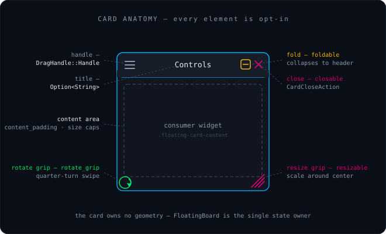
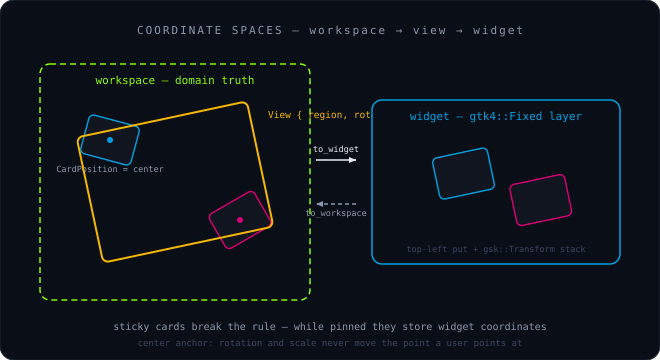
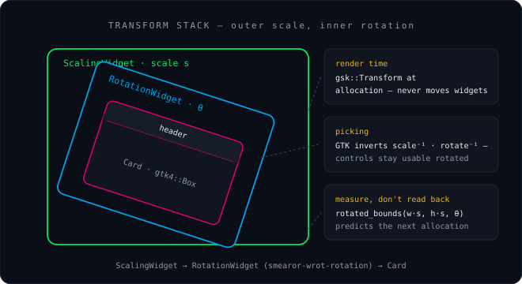
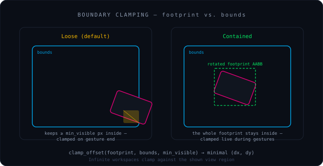
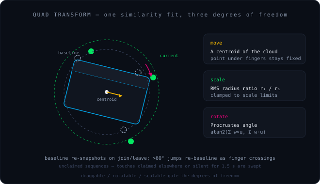
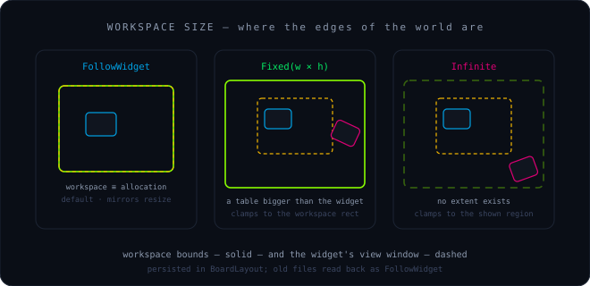
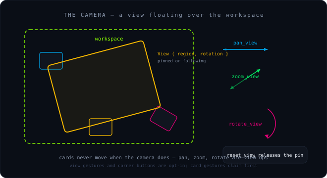
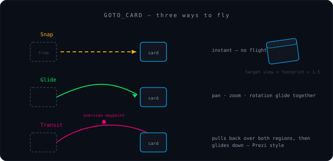
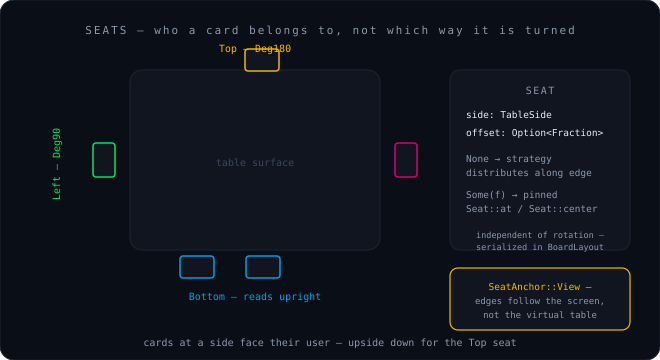
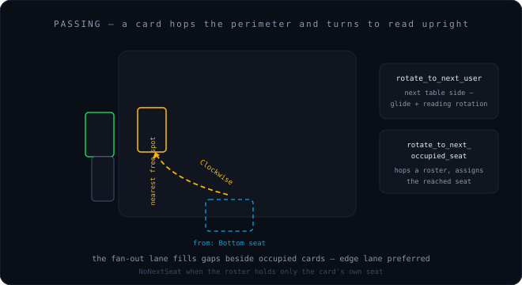

Introduction
Welcome to the documentation for floating-board.
floating-board is a GTK4 library providing a single composite widget —
FloatingBoard — that renders freely movable, rotatable and scalable cards on
top of an application’s content. Think of it as an in-app window manager for
touch surfaces.
Why floating-board?
The widget is designed for table-top multitouch surfaces: screens built
into a table where several users stand on different sides and interact with
the same surface. On such a table there is no “up” and no “down” — content
must be orientable for every user. floating-board makes this practical:
- Cards move, rotate and scale independently. Each card is a regular GTK4 widget that users can drag across the surface, rotate towards themselves with a two-finger gesture, and resize with a pinch gesture.
- The board is a transparent overlay. Cards float above the application content. Touches that do not land on a card fall through to the widgets underneath — no input grab, no modal layer.
- Multiple users at once. GTK touch sequences are independent per card: one user can drag a card on the left while another rotates a card on the right.
- Cards cannot get lost. Boundary clamping keeps at least a configurable slice of every card inside the visible area, even while it is being pushed, turned or scaled.
Use Cases
- Games: place the game controls, score displays or hand-of-cards on the table surface and let each player orient them as needed.
- Presentations: put information on cards that viewers on different sides of the table can pull closer, rotate and enlarge.
- Table-top UIs: build interfaces that are usable from every side of the table at the same time.
Feature Overview
| Feature | Description |
|---|---|
| Move | One-finger drag via header, handle or the whole card |
| Rotate | Two-finger rotation (snaps to 90° steps) via smearor-wrot-rotation |
| Scale | Two-finger pinch zoom with per-card scale limits |
| Boundary clamping | min_visible pixels of every card stay inside the board |
| z-order | Touching a card raises it; initial order via z_index |
| Persistence | BoardLayout snapshot/restore (TOML/JSON), serde behind a feature flag |
| Card chrome | Optional title, fold-to-header, close button, headerless mode |
| Multi-touch | Independent gesture sequences per card |
Getting Started
Add the dependency and create a board over your existing content:
[dependencies]
floating-board = "0.1"
let board = FloatingBoard::new(&content_widget);
let controls = board.add_card(
&controls_widget,
CardConfig { title: Some("Controls".into()), position: CardAnchor::BottomCenter, ..Default::default() },
);Continue to Usage for the full walkthrough, or read about the Domain Model and Architecture first.
Running the Demo
cargo run --example demo
The demo shows a drawing area as background content plus four cards with different interaction profiles (header drag, handle drag, whole-card drag, foldable/closable chrome, 90° rotation), a toolbar for adding cards and snapshot/restore, and a live status line fed by the board’s signals.
Usage
Setup
[dependencies]
floating-board = "0.1"
Serde support (layout snapshots) is enabled by default. Disable it for a leaner dependency tree — all widget functionality still works:
[dependencies]
floating-board = { version = "0.1", default-features = false }
Creating a Board
FloatingBoard::new takes the widget that forms the bottom layer. Everything
the board renders floats above it; gestures on empty areas fall through.
use floating_board::FloatingBoard;
let content = gtk4::Box::new(gtk4::Orientation::Vertical, 0);
// ... fill content ...
let board = FloatingBoard::new(&content);
board.set_content(&other_widget); // swap the bottom layer later
let overlay = board.overlay(); // internal GtkOverlay (edge cases)Adding Cards
Every card wraps an arbitrary consumer widget. add_card generates a
card-N id; add_card_with_id assigns a stable semantic key — preferred
whenever you persist layouts, because ids are the keys in BoardLayout.
use floating_board::CardAnchor;
use floating_board::CardConfig;
use floating_board::DragHandle;
use floating_board::ScaleBounds;
let controls_id = board.add_card_with_id(
"controls",
&controls_widget,
CardConfig {
title: Some("Controls".into()),
position: CardAnchor::BottomCenter,
draggable: true,
rotatable: true,
scalable: true,
foldable: true,
closable: true,
drag_handle: DragHandle::Header,
scale_limits: ScaleBounds::new(0.5, 2.0),
..Default::default()
},
)?;CardConfig Reference
| Field | Type | Default | Description |
|---|---|---|---|
title | Option<String> | None | Header text; a localized fallback is used when the header is shown without a title |
position | CardAnchor | Center | Initial anchor (resolved at first allocation) or Explicit(CardPosition) |
draggable | bool | true | Enable the drag gesture |
rotatable | bool | true | Enable the two-finger rotate gesture |
scalable | bool | true | Enable the pinch gesture |
resizable | bool | false | Show a bottom-right resize grip that scales around the center |
rotate_grip | bool | false | Show a bottom-left rotate grip that quarter-turns in the swipe direction |
foldable | bool | false | Show a fold button; folds the card to its header |
closable | bool | false | Show a close button; removes the card (card-removed) |
headerless | bool | false | Collapse the header to a slim grip |
drag_handle | DragHandle | Header | Header, WholeCard or Handle (grip icon) |
scale_limits | ScaleBounds | 0.5 – 2.0 | Inclusive pinch zoom limits |
min_visible | MinVisible | 40.0 | Pixels that must stay inside the bounds (Loose mode) |
bounds_mode | BoundsMode | Loose | Loose clamps on drag end; Contained keeps the whole footprint inside, live |
anchor_margin | Pixels | 24.0 | Margin edge/corner anchors keep to the board edge |
palette | Option<CardPalette> | None | Per-card color scheme (CardColor::Background, Foreground, Header) |
content_padding | Pixels | 10.0 | Space between the card border and the content widget |
max_width / max_height | Option<i32> | None | Hard cap on the measured size — keeps the card stable when content changes size |
animation_speed_ms | u64 | 500 | Duration of rotation and layout animations |
seat | Option<Seat> | None | Tabletop seat the card is assigned to — independent of its visual rotation |
sticky | bool | false | Pin the card to the screen: it keeps position, rotation and zoom while the view moves |
folded_content | Option<Widget> | None | Custom widget shown while folded instead of the header strip (round button, compact view) |
z_index | Option<i32> | None | Initial stacking order; None appends on top |
CardConfig::default() yields a fully interactive card anchored at the board
center.
Working with Cards
let card = board.card(&controls_id)?; // Result<Card, BoardError>
let all = board.cards(); // Vec<Card>
// Geometry — the board is the single state owner.
let geometry = card.geometry();
card.set_position(CardPosition::new(480.0, 300.0));
card.set_scale(ScaleFactor::new(1.5));
card.set_rotation(SmearorRotation::Deg180); // immediate
card.set_rotation_with_animation(SmearorRotation::Deg180); // zoom-snap transition
card.set_geometry(&CardGeometry { position, rotation, scale });
// Ordering and chrome.
card.raise();
card.set_folded(true); // or card.fold() to toggle
let folded = card.folded();
card.close(); // runs the configured close action (remove or hide)CardConfig::folded_content replaces the whole card while folded,
header included: folding hides the chrome and shows that widget
instead (.floating-card-collapsed makes the card background
transparent). Wire the folded widget to set_folded(false) or
fold() - the card’s own fold button hides with the header. A round
icon button or a compact mini toolbar both work:
let collapsed = Button::from_icon_name("open-menu-symbolic");
board.add_card(&body, CardConfig {
foldable: true,
folded_content: Some(collapsed.clone().upcast()),
..Default::default()
});
let card = board.card(&id)?;
collapsed.connect_clicked(move |_| card.set_folded(false));
// The rotated footprint in board coordinates — union of all footprints is
// the dynamic safe-area of the board.
let region: gtk4::cairo::Region = card.footprint();
board.remove_card(&controls_id)?;Layouts and Seats
smearor-commons-layout provides the generic machinery — the board only
adapts card state to and from it.
Applying a layout strategy
use smearor_commons_layout::FlowLayout;
// Line up all visible cards without overlap, gliding them animatedly:
board.apply_layout(&FlowLayout::default(), None, true)?;
// Or only a selection of cards:
board.apply_layout(&FlowLayout::default(), Some(&[id_a, id_b]), false)?;
// Any `LayoutStrategy<Pixels>` works - `SeatLayout`, or your own:
board.apply_layout(&SeatLayout::default(), None, true)?;apply_layout maps each card to a LayoutItem (displayed footprint,
live rotation, seat), calls arrange against the board bounds and
applies every Placement through the regular geometry path — clamping,
scale limits and geometry-changed behave like manual manipulation.
Placement::size is the target footprint; cards keep their configured
scale. A BoardError::Layout(DoesNotFit) leaves the board untouched.
Seats
A Seat is a TableSide plus an optional Fraction offset along the
edge. It models which user a card belongs to — deliberately decoupled
from the card’s rotation, because the board may be rotated and users
may move:
let config = CardConfig {
seat: Some(Seat::new(TableSide::Bottom)), // assigned, strategy distributes along the edge
// seat: Some(Seat::at(TableSide::Top, Fraction::new(0.25))), // pinned position
// seat: Some(Seat::center(TableSide::Left)), // centered on an edge
..Default::default()
};
let seat = card.seat(); // Option<Seat>
card.set_seat(Some(Seat::center(TableSide::Right))); // emits card-seat-changed
board.set_card_seat(&id, None)?; // clear via the boardSeats are part of layout_snapshot()/restore_layout() via
CardPlacement::seat.
Passing a card to the next user
// Step one table side (Bottom -> Left -> Top -> Right), gliding to the
// edge and rotating into that side's reading orientation:
board.rotate_to_next_user(&id, TurnDirection::Clockwise, true)?;
// Or hop between *occupied* seats of a roster — empty sides are
// skipped, several seats on one side are visited in order:
let roster = [Seat::new(TableSide::Bottom), Seat::center(TableSide::Top)];
board.rotate_to_next_occupied_seat(&id, &roster, TurnDirection::Clockwise, true)?;move_to_edge (usually true) slides the card in front of the target
edge at anchor_margin; false rotates in place.
rotate_to_next_occupied_seat assigns the reached roster seat to the
card (card-seat-changed) — being passed to a user makes it belong to
their seat, which is what lets repeated passes keep hopping the roster.
rotate_to_next_user only advances an explicitly assigned seat;
unassigned cards derive their starting side from their rotation each
time. A passed card slips into the free spot nearest its seat: it
fills gaps left by removed cards along the edge, sits beside occupied
cards without overlap, and may take the lane behind the edge row when
the queue there reaches farther from the seat than a second row would
— the edge lane is preferred.
BoardError::NoNextSeat is returned when the roster holds no seat
other than the card’s current one.
Workspace and View
Card geometry — position, rotation and scale — is stored in workspace
coordinates on a virtual surface. A View camera decides which part of
the workspace maps onto the widget, so panning, zooming or rotating the
table never touches card state. The defaults make the widget a window
exactly covering the workspace — pre-workspace behavior.
Workspace extent
use smearor_commons_layout::WorkspaceSize;
use smearor_commons_geometry::Pixels;
use smearor_commons_geometry::Vec2;
board.set_workspace_size(WorkspaceSize::FollowWidget); // default: mirrors the allocation
board.set_workspace_size(WorkspaceSize::Fixed(Vec2::<Pixels>::new(2000.0, 1600.0))); // a table bigger than the widget
board.set_workspace_size(WorkspaceSize::Infinite); // unboundedFollowWidget(default): the workspace extent tracks the widget allocation — identical behavior to pre-workspace versions.Fixed(size): a fixed workspace extent in pixels, origin at (0,0).Infinite: no extent; clamping falls back to the shown view region (so cards cannot be dragged off-screen and lost).
The camera
let view = board.view(); // effective View { region, rotation }
board.set_view(view); // pin an explicit view
board.reset_view(); // back to the default covering the extent
board.pan_view(Vec2::<Pixels>::new(100.0, 0.0)); // shift by workspace pixels
board.zoom_view(anchor, ScaleFactor::new(1.25)); // zoom in around a workspace point
board.rotate_view(pivot, RotationRad::from_degrees(90.0)); // turn the table around a pointThe default view covers the workspace extent and follows the widget.
set_view, pan_view, zoom_view and rotate_view pin an explicit
view — resizes no longer change zoom or center until reset_view
releases the pin. View itself (smearor_commons_layout) offers
to_widget/to_workspace for coordinate mapping and shown_region
for the aspect-expanded region actually on screen.
User control
Both controls are opt-in (default off) because they share the touch surface with card gestures:
board.set_view_gestures(true)— drag on empty space pans, a pinch zooms around the gesture center and a two-finger twist rotates the table. Card gestures keep precedence: they claim sequences first, and touches starting on a card are denied up front.board.set_view_buttons(true)— overlaid corner controls (zoom in, zoom out, reset) styled via.floating-board-view-controls.
goto_card
use floating_board::GotoRotation;
use floating_board::GotoTransition;
// Fly the camera onto a card, turning it readable for the viewer:
board.goto_card(&id, GotoTransition::Glide, GotoRotation::Upright)?;
// Prezi-style: pull back to an overview of both regions first,
// then glide down onto the card:
board.goto_card(&id, GotoTransition::Transit, GotoRotation::Upright)?;
// Or just bring it on screen without turning the table:
board.goto_card(&id, GotoTransition::Snap, GotoRotation::Keep)?;The target view centers the card’s workspace footprint with a padding
margin. GotoTransition picks the flight (Snap, Glide, Transit),
GotoRotation the destination rotation (Upright rotates so the card
reads upright, Keep pans/zooms only). Flights run on the frame clock
over the card’s animation_speed_ms; a new goto_card supersedes a
running one and any programmatic or gesture view change cancels it.
The destination pins like set_view — reset_view releases it.
A sticky target is pinned to the glass itself, so the camera moves
to the workspace region behind it and rotation is ignored.
Sticky cards
CardConfig::sticky (or card.set_sticky(true)) pins a card to the
screen instead of the workspace. A sticky card keeps its on-screen
position, rotation and zoom no matter how the view pans, zooms or
rotates — like chrome glued to the glass rather than a sheet on the
table. It still clamps against the widget rect, and its gestures work
in screen coordinates.
board.add_card("sticky-hud", &content, CardConfig {
position: CardAnchor::Explicit(CardPosition::new(Vec2::<Pixels>::new(900.0, 60.0))),
sticky: true,
..Default::default()
});
// Toggling never moves the card visually: the stored geometry
// converts between workspace and widget coordinates at the seam.
card.set_sticky(false); // release back onto the tableWhile pinned, the card’s stored position is in widget pixels (also in
Card::geometry() and layout snapshots); all other cards use
workspace coordinates. Sticky cards are skipped by apply_layout,
count as obstacles for seat passes only under SeatAnchor::View, and
passing one to a seat releases the pin first — a card handed to
another user always lands on the table.
Seats and the camera
board.set_seat_anchor chooses where pass-to-seat operations anchor
their table edges:
SeatAnchor::View(default): seats sit at the screen edge — a passed card lands where the user actually sits, however the camera is panned, zoomed or rotated.SeatAnchor::Workspace: seats are fixed positions on the virtual table — they stay where the workspace puts them.
Persistence and clamping
BoardLayout persists workspace and view (via serde(default) —
snapshots from before the workspace read the defaults). Cards stored
out of bounds are clamped on restore as usual. Infinite workspaces
clamp card operations against the shown view region but never
re-clamp on view changes, so panning cannot drag cards along.
Persistence
Snapshots are value objects; file location and format belong to the consumer.
// Capture
let layout: BoardLayout = board.layout_snapshot();
let toml = toml::to_string_pretty(&layout)?;
// Restore (e.g. on startup or --reset-gui-layout)
let layout: BoardLayout = toml::from_str(&file_contents)?;
board.restore_layout(&layout);Restore semantics:
- Unknown
CardIds are skipped with awarn!log — profiles may reference cards that no longer exist; this is not an error. - Geometry is clamped to the current bounds, so nothing restores off-screen.
- Cards missing from the layout keep their current geometry.
Example gui-cards.toml:
version = 1
[[cards]]
id = "controls"
position = [480.0, 660.0]
rotation = 180.0
scale = 1.0
folded = false
sticky = false
seat = { side = "bottom" }
Signals
Connect with connect_closure or the generated connect_* helpers:
// Aggregate channel — debounce your persistence here.
board.connect_closure("geometry-changed", false,
gtk4::glib::closure_local!(move |board: FloatingBoard| {
save(board.layout_snapshot());
}),
);
// Per-card lifecycle.
card.connect_closure("card-moved", false,
gtk4::glib::closure_local!(|card: floating_board::Card| {
println!("{} moved", card.id());
}),
);| Signal | Source | Fires on |
|---|---|---|
card-moved | Card | drag end |
card-rotated | Card | any rotation change (gesture or programmatic) |
card-scaled | Card | transform end or set_scale |
card-raised | Card | raise to top |
card-folded | Card | fold state toggles |
card-seat-changed | Card | seat assignment changes (set_seat, pass to user) |
card-added / card-removed | FloatingBoard | card lifecycle (carries the Card) |
geometry-changed | FloatingBoard | aggregate: any geometry mutation |
Styling
The crate ships a default stylesheet registered with
STYLE_PROVIDER_PRIORITY_FALLBACK — every rule is overridable by your theme:
| Class | Element |
|---|---|
.floating-board | the board itself |
.floating-card-layer | the transparent card layer |
.floating-card | every card |
.floating-card-header | the header strip |
.floating-card-content | the content area |
.floating-card-handle | the grip icon (DragHandle::Handle) |
.floating-card-folded | added while folded |
.floating-card-collapsed | added while folded with folded_content (chrome stripped) |
.floating-card-folded-content | wrapper around folded_content while folded |
.floating-card-headerless | added for headerless cards |
The few crate-owned strings (untitled fallback, fold/close tooltips) are
localized via Fluent (i18n/{en,de}/main.ftl, selected by LANGUAGE/LANG).
All card content is consumer-owned and unaffected.
Demo
cargo run --example demo
Shows four cards on a drawing area inside the board’s content area —
the toolbar and status line sit outside, so cards can never cover them.
The controls card is foldable/closable (Header drag), the info card is
rotated 90° (Handle drag, min_visible = 60), the display card is
headerless (WholeCard drag) and the parameters card folds.
Four demo users sit at seats around the table edge — colored markers on
the background, a matching seat badge on each card. The toolbar adds
cards at runtime, exercises layout_snapshot/restore_layout and
drives the layouting API: “Arrange” flows the visible cards into a
non-overlapping row, “Pass card →” sends the controls card to the next
user — hopping the occupied seats when the “Seats” switch is on
(rotate_to_next_occupied_seat), stepping table sides when off. In
seat mode the markers themselves are draggable along the table edge.
“View gestures”/“View buttons”/“Seats @ view” toggle the camera and
seat anchoring live; “Goto card” and each dynamic card’s “Goto” fly
the camera onto a card — “Prezi goto” selects the transit flight,
“Goto upright” turns the card readable.
A status line shows signals live.
Cards
A card is the unit of content on the board: an arbitrary consumer
widget wrapped in movable, rotatable, scalable chrome. Cards are views —
they own no geometry. The FloatingBoard is the single state owner, and
every Card delegates reads and writes to it through a weak backlink
established at add_card.
flowchart LR
subgraph board["FloatingBoard · gtk4::Box"]
ov["gtk4::Overlay"]
cl["card layer · gtk4::Fixed"]
content["consumer content widget"]
end
subgraph stack["transform stack · per card"]
sc["ScalingWidget"]
ro["RotationWidget"]
ca["Card · gtk4::Box"]
end
ov --> content
ov --> cl
cl --> sc
sc --> ro
ro --> ca
What’s inside
- Anatomy: what a card is made of — header strip, drag handle, title, fold and close buttons, content area, resize and rotate grips, and the folded states.
- Chrome: configuring the frame —
DragHandlevariants,headerless, fold modes includingfolded_content,CardCloseAction, per-cardCardPalette,content_padding, size caps andz_index.
The card API at a glance
| Group | Methods |
|---|---|
| Identity | id(), title(), board() |
| Geometry | geometry(), set_geometry(), position(), set_position(), rotation(), set_rotation(), scale(), set_scale() |
| Animation | set_rotation_with_animation(), glide_to() |
| Chrome | fold(), set_folded(), folded(), close(), raise(), reset() |
| Tabletop | seat(), set_seat(), sticky(), set_sticky() |
| Diagnostics | rendered_bounds(), placed_position(), ancestor_chain(), footprint(), content() |
Signals: card-moved, card-rotated, card-scaled, card-raised,
card-folded, card-seat-changed. See Usage for
the full table and Gestures for how user input turns
into geometry.
Anatomy
A card is a gtk4::Box subclass with two vertical sections: the
header strip (the chrome: handle, title, fold and close buttons)
and the content area (an arbitrary consumer widget). Optional
grips sit on the bottom corners. Everything outside the flags a
CardConfig enables is never built.

The header strip
.floating-card-header carries the drag affordance and the window
controls:
| Element | Flag | Notes |
|---|---|---|
| handle icon | drag_handle: Handle | three-line grip; only shown for DragHandle::Handle |
| title | title: Option<String> | a localized fallback is used when the header shows without a title |
| fold button | foldable | collapses the card to its header |
| close button | closable | runs the card’s CardCloseAction |
headerless collapses the whole strip to a slim grip — for cards that
still need a fold/close path but no title bar.
The content area
.floating-card-content holds one consumer widget — the card imposes
no structure on it. content_padding (default 10 px) insets it from
the card border. max_width/max_height cap the measured size, so
a card stays stable when its content changes size — the cap applies
to the natural size before rotation and scale.
Interactive content keeps working: the transform stack inverts rotation and scale during picking, and the quad tracker never claims touch sequences (see Quad Transform). Buttons, entries and canvases on a card behave exactly as if they were not floating.
The grips
| Grip | Flag | Gesture |
|---|---|---|
| resize grip | resizable | bottom-right corner; drags scale the card around its center within scale_limits |
| rotate grip | rotate_grip | bottom-left corner; a swipe quarter-turns the card in the swipe direction |
Both are one-finger gestures — useful complements to the two-finger transform, and the only rotate path for single-handed use.
The folded states
Folding is a state, not a chrome detail — it is stored in
CardGeometry-adjacent state, serialized in BoardLayout and reported
via card-folded:
- Plain fold (
foldable+set_folded(true)): the content area collapses; the card shrinks to its header strip..floating-card-foldedis added to the style classes. folded_content: a consumer widget that replaces the whole card while folded — header included. Chrome is stripped (.floating-card-collapsedmakes the card background transparent) and the folded widget shows inside.floating-card-folded-content. A round icon button or a compact mini toolbar both work; wire its activation back toset_folded(false)— the card’s own fold button hides with the header.
z-order
Card::raise() re-appends the card’s transform stack on the
gtk4::Fixed layer — the child order is the stacking order. A
released click (or finished drag) raises automatically; z_index
sorts the initial order stably by insertion sequence.
Chrome
CardConfig decides how much window-manager chrome a card gets —
from a fully titled window with fold and close buttons down to a
chrome-less floating content widget.
Drag handles
DragHandle selects which part of the card is the move affordance:
| Variant | Effect |
|---|---|
Header (default) | only the title strip drags — content stays fully interactive |
WholeCard | the entire surface drags — for display-only cards whose content needs no input |
Handle | a dedicated grip icon in the header is the only drag surface — title clicks stay free for content |
draggable: false disables the drag entirely; the card can still be
rotated, scaled and laid out.
Folds and closes
CardConfig {
foldable: true, // fold button in the header
closable: true, // close button in the header
close_action: CardCloseAction::Hide, // or Remove (default)
folded_content: Some(mini_toolbar), // replaces the whole card while folded
..Default::default()
}CardCloseAction decides what the close button means:
Remove(default): destroys the card —card-removedfires and theCardIdis gone fromboard.cards().Hide: collapses the card in place — it keeps its geometry, stays listed and comes back withboard.set_card_visible(&id, true). Suits menu-driven boards that open and close the same panels repeatedly.
board.close_card(&id) runs the configured action programmatically;
is_card_visible reports the state.
Per-card colors
palette accepts a CardPalette — a Palette<CardColor, f64> from
smearor-commons-color — and turns it into a scoped CSS provider at
build time:
use floating_board::CardColor;
use floating_board::CardPalette;
use smearor_commons_color::Color;
let mut palette = CardPalette::new();
palette.insert(CardColor::Background, Color::<f64>::new(0.1, 0.12, 0.18));
palette.insert(CardColor::Foreground, Color::<f64>::new(0.9, 0.9, 0.9));
palette.insert(CardColor::Header, Color::<f64>::new(0.16, 0.2, 0.3));Slots: Background (card surface), Foreground (title, buttons, grip
strokes), Header (header strip). Unfilled slots keep the themed
colors — a palette may fill any subset. Per-seat card colors are the
idiomatic use: each player’s cards carry their marker color.
Layout-related flags
| Field | Effect |
|---|---|
headerless | collapses the header to a slim grip |
content_padding | inset between card border and content (default 10 px) |
max_width / max_height | hard cap on measured card size |
z_index | initial stacking order; None appends on top |
animation_speed_ms | duration of rotation, glide and camera animations on this card (default 500 ms) |
CardConfig::default() yields a fully interactive card: draggable,
rotatable, scalable, header shown, Center anchored. Everything else
is opt-in.
Geometry
floating-board separates where a card is from where it appears.
Card state — CardGeometry { position, rotation, scale } — lives in
workspace coordinates on a virtual surface. A View camera maps a
region of that workspace onto the widget; GTK transform widgets then
map the widget onto the screen. Each hop is a different coordinate
space, and the crate keeps them strictly apart.
flowchart LR
subgraph ws["Workspace · domain truth"]
cg["CardGeometry<br/>center · rotation · scale"]
end
subgraph view["View camera"]
r["region + rotation"]
end
subgraph wd["Widget · screen"]
tl["gtk4::Fixed top-left<br/>+ gsk::Transform stack"]
end
cg --> r --> tl
tl -.->|"to_workspace"| cg
Three invariants hold the model together:
- The center is the anchor.
CardPositionstores the card’s center, so rotation and scale never shift the point a user is pointing at. - Geometry is written once. The board owns every card’s
CardGeometry;Cardobjects are pure views. - Transforms are render-time. Scale and rotation apply via
gsk::Transformat allocation — GTK’s own picking inverts them, so card controls stay interactive at any angle.
What’s inside
- Coordinate Spaces: workspace vs.
widget vs. card-local — where
CardPositionlives, howViewmaps between spaces, and why the center anchor matters. - Transform Stack: the
ScalingWidget → RotationWidget → Cardnesting, how displayed size is predicted rather than read back, and animated transitions. - Bounds & Clamping:
min_visible,BoundsMode::LoosevsContained, rotated footprints and the pureclamp_offsetfunction.
Coordinate Spaces
Three coordinate spaces are in play, and the crate keeps them strictly apart — a value from one is never silently used as another.

| Space | Unit | Owner |
|---|---|---|
| workspace | Vec2<Pixels> on the virtual surface | domain — CardGeometry is stored here |
| widget | pixels on the FloatingBoard allocation | view — View::to_widget maps workspace → widget |
| card-local | pixels inside a card’s transform stack | GTK — gesture source coordinates |
The center anchor
CardPosition is the card’s center, never its top-left. Rotation
and scale apply around the center, so the point a user looks at —
or drags — stays put while the card’s bounding box changes shape.
gtk4::Fixed positions children by top-left, so the board converts on
every placement:
$$\text{top-left} = \text{center} - \frac{\text{displayed size}}{2}$$
The displayed size is predicted, not read back: RotatedLayout’s
measure reports the rotated bounding box of the natural size, and
ScalingLayout multiplies by the scale — so
rotated_bounds(w·s, h·s, θ) always equals what GtkFixed allocates
next. The center anchor stays exact even while a rotation or scale
transition is still pending re-allocation.
The view mapping
board.view() returns the effective View<Pixels> — { region, rotation }. It converts both ways:
let view = board.view();
let on_screen = view.to_widget(workspace_point);
let on_table = view.to_workspace(widget_point);view.shown_region(allocation) reports the region actually on screen:
the mapped workspace region aspect-expanded to the widget’s aspect
ratio — the honest answer to “what does the user see”.
Sticky cards are the deliberate exception: while sticky, a card’s
stored position is in widget coordinates (also what
Card::geometry() and layout snapshots report); all other cards
always speak workspace. See Sticky Cards.
Diagnostics
board.card_alignment(&card) returns a CardAlignment — model
position, stored put spot on the layer and rendered bounds in
widget coordinates. The invariant is
rendered.center() == position (rotation and scale apply around the
center); drift quantifies any violation. It exists for
input-region coverage checks and geometry debugging, not for daily
use.
Transform Stack
Each card renders through a nested transform stack on the
gtk4::Fixed layer:

ScalingWidget— outer transform, applies the card’sScaleFactoraround the center viaScalingLayout.RotationWidget(smearor-wrot-rotation) — inner transform, appliesSmearorRotationaround the center viaRotatedLayout.Card— thegtk4::Boxwith header and content.
Both transforms are applied as gsk::Transform at allocation time —
not by moving widgets. That is the trick that keeps cards usable:
GTK4’s picking machinery automatically multiplies the pointer by the
full inverse stack scale⁻¹ · rotate⁻¹, so a rotated, zoomed card’s
buttons land exactly where the user sees them. The same stack gives
card.footprint() its region — the rasterized union of scanline
strips.
Predicted sizes
The layouts’ measure is what makes the center anchor work without a
read-back: RotatedLayout reports the rotated bounding box of the
card’s natural size, ScalingLayout multiplies it by the scale
factor. The board can therefore compute where the card will be
allocated and keep CardPosition consistent mid-transition.
Animated transitions
Geometry writes can animate on the frame clock instead of snapping:
| Call | Effect |
|---|---|
card.set_rotation_with_animation(rotation) | zoom-snap transition to the new angle |
card.glide_to(&geometry) / board.glide_card_geometry(&id, target) | slide position, rotation and scale together |
apply_layout(..., animated: true) | every placement glides instead of jumping |
goto_card(&id, transition, rotation) | camera flight — see goto_card |
Duration comes from the card’s animation_speed_ms (default 500 ms).
Animations are superseded, not queued: a new animated write to the
same card bumps a SequenceNumber generation and ticks of the old
animation notice the stale generation and stop themselves — so a
goto_card during a glide, or a gesture during a goto_card, simply
wins.
Rotation changes (gesture snap or programmatic) also re-center the
card on its anchor and re-clamp it into the bounds — the board
connects notify::rotation on the RotatedLayout once per card —
and emit card-rotated plus geometry-changed.
Bounds & Clamping
A card may never get lost. BoundsMode decides how strictly the
card’s rotated footprint stays inside the clamp domain — live
during gestures or only when they end.

BoundsMode | Rule | When |
|---|---|---|
Loose (default) | at least min_visible px of the footprint must overlap the bounds on each axis | on drag end, rotation/scale change, resize, restore |
Contained | the full footprint must stay inside at all times | clamped live during drag, pinch and rotation |
min_visible defaults to 40 px — a slice a user can still grab. The
required overlap is capped at half the bounds size, so clamping stays
satisfiable on tiny boards.
The math
Clamping is a pure domain function — no GTK, directly unit-testable:
domain::clamp_offset(footprint: &Rect, bounds: &Rect, min_visible: MinVisible) -> (f64, f64)It returns the minimal translation that puts min_visible pixels of
the axis-aligned footprint back inside bounds on each axis. Because
it operates on the footprint — the AABB of the rotated, scaled card —
the guarantee holds at any angle, not just quarter turns.
The clamp domain
What “inside” means depends on the workspace:
WorkspaceSize::FollowWidget/Fixed— the workspace extent.WorkspaceSize::Infinite— no extent exists; clamping falls back to the shown view region, so cards cannot be dragged off-screen and lost.SeatAnchor::View— the clamp domain widens to the shown region, so cards may rest at seat positions beyond the workspace extent.
Infinite never re-clamps on view changes — panning the camera
cannot drag cards along.
Footprints and the safe area
card.footprint() returns a gtk4::cairo::Region — the union of
rotated_region_scanlines strips rasterized from the card’s rotated
rect, the same algorithm smearor-wrot-rotation uses for its input
region. board.cards_region() unions all footprints into the board’s
dynamic safe area; board.card_footprint(&id) resolves a single card.
Useful when the content layer should avoid drawing under cards — or
when it deliberately should.
Gestures
Cards are manipulated by several users at once, from any side of the table — so the gesture layer is designed for independence: every card carries its own controllers, every touch sequence is tracked separately, and nothing grabs input globally.
sequenceDiagram
actor U as User (touch)
participant L as EventControllerLegacy
participant D as GestureDrag
participant B as FloatingBoard
U->>L: touch begin / update / end
U->>D: one-finger drag on handle
L->>B: board-space point set (unclaimed)
D->>B: pointer samples (board space)
B->>B: fit similarity transform / apply delta
B->>B: clamp · update geometry
B-->>U: card-moved / card-rotated / card-scaled
| Gesture | Controller | Effect |
|---|---|---|
| 1-finger drag on handle/header/card | GestureDrag | move (live), clamp on end |
| 1-finger tap on card | GestureClick | raise on release |
| 2+ fingers on card | EventControllerLegacy (quad tracker) | move + rotate + scale in one similarity fit |
| Rotate grip swipe | GestureDrag | quarter-turn in the swipe direction |
| Resize grip drag | GestureDrag | scale around the card center |
| Drag on empty space | GestureDrag (opt-in) | pan the view camera |
| Pinch / twist on empty space | quad tracker (opt-in) | zoom / rotate the view camera |
Card gestures claim sequences before view gestures, and touches starting on a card are denied to the camera outright — cards always win.
What’s inside
- Drag & Raise: the one-finger path — how the board derives deltas in board space without a feedback loop, drag handles, grips, raise-on-release.
- Quad Transform: the multi-touch path — the unclaimed point-cloud tracker, the centroid/radius/Procrustes fit, re-baselining and stale-touch sweeping.
Drag & Raise
The one-finger path: GestureDrag on the configured drag surface
moves the card live, GestureClick raises it on release.
Drag surfaces
CardConfig::drag_handle picks what the drag gesture attaches to —
the header strip, a dedicated handle icon, or the whole card
(DragHandle, see Chrome). The
two corner grips are separate GestureDrag controllers: the
rotate grip converts the pointer’s angular sweep around the card
center into quarter turns in the swipe direction, and the resize
grip converts radial distance into set_scale within
scale_limits.
Deltas in board space
GestureDrag reports offsets in the coordinate space of the drag
source — which lives inside the rotated, scaled transform stack and
moves with the card. Mapping that delta under the current transform
creates a feedback loop: the reference frame shifts exactly as the
card tracks the pointer, visible as jitter and reduced pointer speed.
The board therefore ignores the reported offset and derives the delta
from two consecutive board-space pointer samples: the pointer
position is read from Gesture::current_event’s surface coordinates
and mapped through Native::compute_point into the card layer — a
frame that never depends on the card’s own transform. A pure-vector
fallback (rotate_vector · scale) covers the window before the first
allocation.
The same trick applies to the view camera: a pan drag on empty space
reads board-space samples, maps them to_workspace and pans the
View so the table follows the fingers exactly.
Raise on release
A GestureClick that releases without a drag claims the sequence and
re-appends the card’s transform stack on the gtk4::Fixed layer —
the child order is the stacking order, so the card pops to the top.
card-raised fires; a finished drag raises the same way. One card
serves one active drag sequence at a time, but sequences on
different cards are independent — two users can drag two cards
simultaneously.
On drag end (and in Contained mode during the drag) the card
re-clamps into the bounds — see
Bounds & Clamping — and card-moved plus
geometry-changed fire.
Quad Transform
Move, rotate and zoom are one gesture, not three competing ones.
A raw EventControllerLegacy on each card observes every touch
sequence — TouchBegin, Update, End, Cancel — without
claiming any. Each live finger maps to a tracked board-space point;
with two or more points the board fits a similarity transform between
a baseline point cloud and the current one. (GestureSingle-based
slots were abandoned: a single locks onto the first sequence it sees
and cannot distribute touches across siblings — and unclaimed
sequences keep buttons and content on the card working.)

The fit
The tracker keeps TrackedTouch points in card-layer board space.
Against the baseline cloud, the current cloud yields all three
degrees of freedom at once:
- Move — the card center follows the point-cloud centroid: the card point under the finger polygon stays fixed.
- Scale — the RMS radius ratio of the two clouds, clamped to
scale_limits; the card keeps its aspect ratio. - Rotate — the Procrustes angle
atan2(Σ w×u, Σ w·u)between the two point sets, applied viaRotationWidget::set_rotation(negated — the angle is computed in y-down screen coordinates).
draggable / rotatable / scalable gate which degrees of freedom
apply to the fit — a card with rotatable: false moves and scales
without turning.
Re-baselining
The baseline re-snapshots whenever a finger joins or leaves, so the transform never jumps mid-gesture. Two safety valves handle the degenerate cases:
- Finger crossing — a frame-to-frame angle jump beyond 60° usually means the point cloud passed through its own centroid; the tracker re-baselines instead of applying a violent twist.
- Lost touches — a touch that gets claimed by another gesture,
or produces no event for
QUAD_STALE_MS(1.5 s), is swept out on the next update. Slot ids recycle, so a stale slot can belong to a new touch — the timestamp check is what tells them apart, and lostTouchEndevents cannot linger as phantom points.
smearor-wrot-rotation’s built-in rotate gesture is disabled on the
board — the quad fit already covers rotation and keeps all three
DOFs consistent.
Workspace & View
Card geometry lives on a virtual workspace — a surface that can be
exactly the widget, a fixed table larger than the screen, or unbounded.
A View camera decides which part of the workspace the widget
shows, so panning, zooming and rotating the table never touches card
state. Sticky cards opt out: they pin to the glass instead of the
table.
flowchart TB
subgraph wss["WorkspaceSize"]
fw["FollowWidget · default"]
fx["Fixed w × h"]
inf["Infinite"]
end
subgraph cam["View camera"]
reg["region + rotation<br/>pinned or following"]
end
subgraph nav["navigation"]
pz["pan / zoom / rotate<br/>gestures · buttons · API"]
go["goto_card · goto_view"]
end
wss --> cam
pz --> cam
go --> cam
What’s inside
- Workspace Size:
FollowWidget,FixedandInfiniteextents — and how each mode decides the clamp domain. - The Camera: the
Viewvalue, pinning and resetting,pan_view/zoom_view/rotate_view, opt-in view gestures and the overlay control buttons. - goto_card: camera flights onto a card —
Snap,Glideand the Prezi-styleTransit, plusGotoRotationand the flight lifecycle. - Sticky Cards: cards pinned to the screen — the coordinate seam, layout interactions and the release-to-table rules.
Workspace Size
WorkspaceSize<Pixels> (from smearor-commons-layout) is the extent
of the virtual surface card geometry lives on. Card positions are
always workspace coordinates — the mode only decides where the edges
of the world are.

use smearor_commons_layout::WorkspaceSize;
use smearor_commons_geometry::{Pixels, Vec2};
board.set_workspace_size(WorkspaceSize::FollowWidget); // default
board.set_workspace_size(WorkspaceSize::Fixed(Vec2::<Pixels>::new(2000.0, 1600.0)));
board.set_workspace_size(WorkspaceSize::Infinite);| Mode | Extent | Clamp domain |
|---|---|---|
FollowWidget (default) | mirrors the widget allocation — identical to pre-workspace behavior | the allocation |
Fixed(size) | a fixed workspace in pixels, origin at (0, 0) — a table bigger than the widget | the workspace rect |
Infinite | unbounded — no extent exists | the shown view region, so cards cannot be lost off-screen |
board.workspace_bounds() returns the active Rect<Pixels> — the
resolved extent for FollowWidget/Fixed, or the shown region for
Infinite.
The choice is persisted: workspace is a field of BoardLayout
(serde(default) — files written before the workspace read back as
FollowWidget, exactly the old behavior).
The Camera
View<Pixels> is the camera: a workspace region plus a rotation
that decides what the widget shows. Cards never move when the camera
does — panning, zooming and rotating the table is a pure view
operation.

Pinning and resetting
let view = board.view(); // the effective view, pinned or default
board.set_view(view); // pin an explicit view
board.reset_view(); // release the pin
board.pan_view(Vec2::<Pixels>::new(100.0, 0.0));
board.zoom_view(anchor, ViewScaleFactor::new(1.25)); // zoom around a workspace point
board.rotate_view(pivot, RotationRad::from_degrees(90.0));The default view covers the workspace extent and follows the widget —
resizes keep it covering the extent. set_view and every pan/zoom/
rotate pin an explicit view: resizes no longer change zoom or
center until reset_view releases the pin.
View itself offers to_widget/to_workspace for coordinate
mapping and shown_region for the aspect-expanded region actually on
screen — see Coordinate Spaces.
User control
Both controls are opt-in (default off) because they share the touch surface with card gestures:
board.set_view_gestures(true)— a drag on empty space pans, a pinch zooms around the gesture center, a two-finger twist rotates the table. Card gestures keep precedence: they claim sequences first, and touches starting on a card are denied up front.board.set_view_buttons(true)— overlaid corner controls (zoom in, zoom out, reset) styled via.floating-board-view-controls.
Custom flights
board.goto_view(target, transition, duration) flies the camera to
an arbitrary View — the same machinery goto_card uses, exposed
for camera choreography that is not about a card.
goto_card
goto_card is the camera’s answer to “show me that card”: it flies
the view onto the card’s workspace footprint — and optionally turns
the table so the card reads upright for the viewer.

use floating_board::{GotoRotation, GotoTransition};
board.goto_card(&id, GotoTransition::Glide, GotoRotation::Upright)?;
board.goto_card(&id, GotoTransition::Transit, GotoRotation::Upright)?;
board.goto_card(&id, GotoTransition::Snap, GotoRotation::Keep)?;Transitions
GotoTransition | Flight |
|---|---|
Snap | apply the target view instantly |
Glide (default) | pan, zoom and rotation glide together on the frame clock |
Transit | Prezi-style: pull back to a region covering both the current and the target view, then glide down onto the card — one flight over a waypoint, not two chained animations |
Rotations
GotoRotation | Destination |
|---|---|
Keep | pan/zoom only — the table keeps its rotation |
Upright | rotate the view so the card reads upright for the viewer |
The target view centers the card’s workspace footprint with a padding
margin (GOTO_CARD_PADDING = 1.5× the footprint). Flights run on the
card’s animation_speed_ms.
Lifecycle
A new goto_card supersedes a running one — the animation
generation bumps and the old flight’s ticks stop themselves. Any
programmatic or gesture view change cancels a flight in progress.
The destination pins the view like set_view — reset_view
releases it.
A sticky target is pinned to the glass itself: the camera moves to
the workspace region behind it, and rotation is ignored — turning
the table cannot turn a card that is not on it.
Sticky Cards
CardConfig::sticky pins a card to the screen instead of the
workspace — chrome glued to the glass rather than a sheet on the
table. A sticky card keeps its on-screen position, rotation and zoom
no matter how the view pans, zooms or rotates; HUD-style toolbars
are the idiomatic use.
board.add_card(&hud, CardConfig {
position: CardAnchor::Explicit(CardPosition::new(Vec2::<Pixels>::new(900.0, 60.0))),
sticky: true,
..Default::default()
});
card.set_sticky(true); // pin to the glass
card.set_sticky(false); // release back onto the tableThe coordinate seam
Toggling never moves the card visually: at the seam, its stored
CardPosition converts between workspace and widget coordinates
through the current View mapping. Two consequences to keep in mind:
- While pinned,
Card::geometry()(and layout snapshots) report widget coordinates; for every other card they report workspace coordinates. - Gestures still work — in screen coordinates — and the card still clamps, against the widget rect rather than the workspace.
Layout interactions
Sticky cards are deliberately excluded from table semantics:
apply_layoutskips them — strategies arrange table content, not chrome.- They count as obstacles for seat passes only under
SeatAnchor::View(where seats live on screen anyway). - Passing a sticky card to a seat releases the pin first — a card handed to another user always lands on the table.
- A
goto_cardonto a sticky card flies to the workspace region behind it;GotoRotationis ignored.
Tabletop
floating-board is built for table-top surfaces: several users stand
around one horizontal screen, each reading from their own side. The
tabletop vocabulary models who a card belongs to — independently
of which way the card is currently turned — and moves cards between
users in reading orientation.
flowchart LR
subgraph seat["Seat model"]
s["Seat = TableSide<br/>+ Option<Fraction>"]
sa["SeatAnchor<br/>View · Workspace"]
end
subgraph pass["passing"]
nxt["rotate_to_next_user"]
ros["rotate_to_next_occupied_seat"]
end
subgraph lay["layout"]
st["LayoutStrategy<Pixels><br/>Flow · Seat · custom"]
end
s --> nxt
s --> ros
sa --> pass
st -.->|"apply_layout"| seat
smearor-commons-layout provides the generic machinery —
TableSide, Seat, LayoutStrategy, FlowLayout, SeatLayout —
and the board adapts card state to and from it. The layout crate’s
book
documents the primitives; the chapters here document what the board
does with them.
What’s inside
- Seats:
Seat, pinned vs. distributed positions,SeatAnchor— whether seats live at the screen edge or on the virtual table. - Passing Cards:
rotate_to_next_user, the occupied-seat roster, fan-out lanes and theNoNextSeaterror. - Layout Strategies:
apply_layout— mapping cards toLayoutItems, animated placement,DoesNotFitand writing custom strategies.
Seats
A Seat (from smearor-commons-layout) is a TableSide plus an
optional Fraction offset along the edge. It models which user a
card belongs to — deliberately decoupled from the card’s rotation,
because the board may be rotated and users may move around.

use smearor_commons_layout::{Seat, TableSide};
use smearor_commons_geometry::Fraction;
let config = CardConfig {
seat: Some(Seat::new(TableSide::Bottom)), // assigned, strategy distributes
// seat: Some(Seat::at(TableSide::Top, Fraction::new(0.25))), // pinned to a position
// seat: Some(Seat::center(TableSide::Left)), // centered on an edge
..Default::default()
};
let seat = card.seat();
card.set_seat(Some(Seat::center(TableSide::Right))); // emits card-seat-changed
board.set_card_seat(&id, None)?; // clear via the board- Pinned —
Seat::at(side, fraction)takes an exact offset along the edge. - Distributed —
offset: Nonelets a strategy (or the pass fan-out) pick a spot. Seat::nearestderives the closest seat from a rotation — used for unassigned cards; underSeatAnchor::Viewit reads the rendered (card + view) rotation, underWorkspacethe workspace rotation.
Seats serialize into BoardLayout via CardPlacement::seat.
Where the edges live
board.set_seat_anchor chooses what “the table edge” means for
pass-to-seat operations:
SeatAnchor | Edges | Effect |
|---|---|---|
View (default) | the screen edge — where the users physically sit | a passed card lands at the visible edge facing its user, however the camera is panned, zoomed or rotated; the clamp domain widens to the shown region |
Workspace | the workspace extent — fixed positions on the virtual table | the card lands at the workspace edge wherever the view currently shows it |
The whole pass placement — edge position, fan-out lane, margin,
target rotation — is computed in the anchor’s space and mapped back
through to_workspace, so SeatAnchor::View is the mode that keeps
“the bottom seat” glued to “the user standing at the bottom of the
screen” even while the table is turned.
Passing Cards
Passing is the tabletop signature move: a card glides to another user’s edge and turns into their reading orientation. Two entry points cover the two questions — “next side of the table” and “next person actually playing”.

Next side of the table
// Bottom → Left → Top → Right (CounterClockwise reverses),
// gliding to the edge at anchor_margin and rotating into the
// side's reading orientation:
board.rotate_to_next_user(&id, TurnDirection::Clockwise, true)?;move_to_edge (usually true) slides the card in front of the
target edge; false rotates it in place. rotate_to_next_user only
advances an explicitly assigned seat — unassigned cards derive
their starting side from their current rotation each time, which
still gives a sensible “turn it toward the next side”.
Next occupied seat
let roster = [Seat::new(TableSide::Bottom), Seat::center(TableSide::Top)];
board.rotate_to_next_occupied_seat(&id, &roster, TurnDirection::Clockwise, true)?;The roster is the occupied seats — empty sides are skipped, several
seats on one side are visited in order. The reached roster seat is
assigned to the card (card-seat-changed): being passed to a
user makes the card belong to their seat, which is what lets repeated
passes keep hopping the roster. BoardError::NoNextSeat comes back
when the roster holds no seat other than the card’s current one.
The fan-out lane
A passed card does not stack on top of what is already there — it slips into the free spot nearest its seat:
- it fills gaps left by removed cards along the edge,
- it sits beside occupied cards without overlap,
- and it may take the lane behind the edge row when the queue there would reach farther from the seat than a second row — the edge lane is preferred, but closeness to the seat wins.
Sticky cards are released to the table before the pass lands; other
sticky cards count as obstacles only under SeatAnchor::View — see
Seats.
Layout Strategies
apply_layout arranges cards through a LayoutStrategy<Pixels> —
the same contract smearor-commons-layout defines for headless
tabletop layouting. The board maps cards to LayoutItems, calls
arrange against the workspace bounds and applies every Placement
through the regular geometry path.
use smearor_commons_layout::{FlowLayout, SeatLayout};
// All visible cards, gliding animatedly:
board.apply_layout(&FlowLayout::default(), None, true)?;
// Only a selection, snapping:
board.apply_layout(&FlowLayout::default(), Some(&[id_a, id_b]), false)?;
// Around the table edges:
board.apply_layout(&SeatLayout::default(), None, true)?;What the board hands the strategy
Each selected card becomes a LayoutItem carrying its displayed
footprint (natural size under current scale, rotated), its live
rotation and its seat. The strategy sees footprints, never widgets
— it answers Placements with a target center, size, rotation and
optionally a seat.
Placement::size is the target footprint; cards keep their
configured scale_limits. Because placements flow through the normal
geometry path, clamping, scale limits and geometry-changed behave
exactly like manual manipulation — and with animated: true every
placement becomes a per-card frame-clock glide.
DoesNotFit
A strategy reports the first item it cannot place
(LayoutError::DoesNotFit { index, items }), surfaced as
BoardError::Layout(...). A failed arrange leaves the board
untouched — placements are computed in full before any is applied,
so a layout either lands completely or not at all.
Built-in and custom
| Strategy | Behavior |
|---|---|
FlowLayout | anchored rows (AnchorWeights corner + gap), non-overlapping, wrap to the next line |
SeatLayout | items along table edges — pinned seats take their offset, unpinned spread centered, rotated to the side’s orientation |
| custom | any LayoutStrategy<Pixels> impl — signatures in the layout book |
Sticky cards are skipped entirely — strategies arrange table content, not screen chrome.
Domain Model
The floating_board::domain module is the heart of the library. It contains
no gtk4 dependency: only newtypes, enums and pure geometry functions.
Everything here is display-free and unit-testable — the same types appear in
the widget API, in gesture handling, and in the persisted layout files.
Design Principles
- Radically strict types. Every concept is a newtype or enum with
semantic meaning: a
CardPositionis never confused with a pixel offset, and aScaleFactorcan never silently become negative. - The board owns the state. Position, rotation and scale exist exactly
once per card — inside the
FloatingBoard.Cardobjects are views that delegate every geometry read and write to the board. Widget children never own geometry state. - Feature-gated serialization. Serde implementations on the domain types
live behind the
serdecargo feature (enabled by default). Building with--no-default-featuresremoves the persistence dependency entirely.
Type Reference
Identity
| Type | Description |
|---|---|
CardId | Newtype over String. Consumers assign stable, semantic keys such as "controls" or "params" that survive in persisted layouts. add_card generates card-N ids; add_card_with_id takes a semantic key. |
CardPosition | Newtype over (f64, f64) workspace pixels — the card’s center point, not its top-left corner. The center anchor stays stable under rotation and scaling. Serializes as a [x, y] pair. (Sticky cards are the exception: while pinned they store widget pixels.) |
Geometry
| Type | Description |
|---|---|
CardGeometry | { position: CardPosition, rotation: SmearorRotation, scale: ScaleFactor } — the complete geometric state of a card and the unit of persistence. |
ScaleFactor | Newtype over f64 (1.0 = natural size). Always strictly positive; per-card limits are applied via ScaleBounds. |
ScaleBounds | { min: f64, max: f64 } — inclusive scale limits, default 0.5 – 2.0. Arguments are normalized so min <= max. |
SmearorRotation | Rotation enum from smearor-wrot-rotation: Deg0, Deg90, Deg180, Deg270, Deg(f32). Re-exported by this crate. In CardGeometry it serializes as a plain degree value (rotation = 180.0). |
MinVisible | Newtype over f64 pixels — the minimum overlap a card must keep inside the board bounds. Default 40.0. |
Rect | GTK-free axis-aligned rectangle (x, y, width, height) used for footprints and bounds in the pure math functions. |
Placement
| Type | Description |
|---|---|
CardAnchor | Declarative initial placement: TopLeft … BottomRight (nine anchors) plus Explicit(CardPosition). Anchors are resolved once the card’s natural size and the board bounds are known. |
DragHandle | Which part of a card is the drag affordance: Header (default — only the title strip drags, content stays interactive), WholeCard (display-only cards), Handle (dedicated grip icon in the header). |
CardPlacement | { id: CardId, geometry: CardGeometry, folded: bool, seat: Option<Seat>, sticky: bool } — one entry of a layout, serialized flat; the non-geometry fields default via serde(default) for older files. |
BoardLayout | { version: u8, workspace, view, seat_anchor, cards: Vec<CardPlacement> } — the serializable snapshot produced by layout_snapshot() and consumed by restore_layout(). version is reserved for future migrations (currently 1); the workspace fields default via serde(default) so older files parse as FollowWidget plus the default view — exactly the pre-workspace behavior. |
BoardError | UnknownCard(CardId) | DuplicateCard(CardId) | Layout(..) | NoNextSeat — the crate’s thiserror error type. |
BoundsMode | Loose (default) | Contained — how strictly a card’s footprint is kept inside the bounds. |
SeatAnchor | View (default) | Workspace — where pass-to-seat operations anchor table edges. |
TurnDirection | Clockwise (default) | CounterClockwise — the direction a card is passed around the table. |
GotoTransition | Snap | Glide (default) | Transit — how goto_card moves the camera. |
GotoRotation | Keep | Upright — the destination rotation of a goto_card flight. |
CardPalette / CardColor | Semantic color set per card (Background, Foreground, Header), turned into a scoped CSS provider. |
Configuration (widget layer)
CardConfig technically lives in the widget layer but uses only domain
types: title, position: CardAnchor, draggable, rotatable, scalable,
foldable, closable, headerless, drag_handle,
scale_limits: ScaleBounds, min_visible: MinVisible, z_index.
Pure Geometry Functions
All board math is implemented as pure functions over the domain types — no GTK, no display server, directly unit-testable.
rotated_bounds(width, height, degrees) -> (f64, f64)
Axis-aligned bounding box of a rectangle rotated around its center:
$$\text{bbox}_w = W |\cos\theta| + H |\sin\theta|, \qquad \text{bbox}_h = W |\sin\theta| + H |\cos\theta|$$
This is exactly the size gtk4::Fixed allocates for a card stack, so the
board can predict a card’s displayed size before it is realized.
rotate_vector(x, y, degrees) -> (f64, f64)
Rotates a vector — used as the fallback for mapping drag offsets from card space into board space.
rotated_region_scanlines(width, height, degrees) -> Vec<(i32, i32, i32)>
Rasterizes a rotated rectangle into horizontal scanline strips
(y, x_start, x_end) relative to its center. The widget layer unions these
into the cairo::Region returned by card.footprint() — the same
scanline-intersection algorithm smearor-wrot-rotation uses for its input
region.
resolve_anchor(anchor, bounds, footprint_w, footprint_h) -> CardPosition
Resolves a CardAnchor into a center position. Edge anchors keep the card
ANCHOR_MARGIN (24 px) inside the bounds; Center centers the card;
Explicit passes its position through unchanged.
clamp_offset(footprint, bounds, min_visible) -> (f64, f64)
The boundary-clamping function. Returns the minimal translation so that at
least min_visible pixels of footprint overlap bounds on each axis.
Applying the offset to a card’s position pushes it back inside. The required
overlap is capped at half the bounds size so it stays satisfiable on tiny
boards.
Serialization Format
BoardLayout serializes flat per card — designed for gui-cards.toml:
version = 1
workspace = { fixed = [2000.0, 1600.0] }
seat_anchor = "workspace"
[[cards]]
id = "controls"
position = [480.0, 660.0]
rotation = 180.0
scale = 1.0
folded = false
sticky = false
seat = { side = "bottom" }
positionis the card center in workspace coordinates, as an[x, y]pair.rotationis plain degrees (independent ofSmearorRotation’s own serde representation).scaleis the factor (1.0= natural size).workspace,viewandseat_anchorcarryserde(default)— files from before the workspace read the defaults.
Where the file lives and which format is used (TOML, JSON, …) is entirely up
to the consumer — the library only produces and consumes the BoardLayout
value. See Usage for restore semantics.
Architecture
floating-board is split into two layers: a pure domain core and a thin GTK
widget layer that maps GTK mechanics (gestures, layout, transforms) onto
domain operations.
graph TD
classDef consumer fill: #00a1e4, stroke: #ffffff, stroke-width: 2px, color: #ffffff
classDef widget fill: #1e1e1e, stroke: #00a1e4, stroke-width: 2px, color: #ffffff
classDef domain fill: #89fc00, stroke: #333333, stroke-width: 2px, color: #000000
Consumer["Consumer application<br/><small>floating_board::FloatingBoard + domain types in/out</small>"]:::consumer --> Widget
subgraph Widget["src/widget/ - ObjectSubclass glue (gestures, layout, CSS)"]
FB["FloatingBoard > Overlay { content, Fixed { card stacks } }"]
end
Widget --> Domain
subgraph Domain["src/domain/ - pure Rust, no gtk4"]
DT["NewTypes, Enums, geometry math,<br/>BoardLayout serde"]
end
Widget Stack
graph TD
classDef board fill: #00a1e4, stroke: #ffffff, stroke-width: 2px, color: #ffffff
classDef layer fill: #1e1e1e, stroke: #00a1e4, stroke-width: 2px, color: #ffffff
classDef card fill: #89fc00, stroke: #333333, stroke-width: 2px, color: #000000
classDef content fill: #dc0073, stroke: #ffffff, stroke-width: 2px, color: #ffffff
Board["FloatingBoard (gtk4::Box)"]:::board --> Overlay["gtk4::Overlay"]:::layer
Overlay --> Content["content widget (consumer)"]:::content
Overlay --> Fixed["card layer (gtk4::Fixed)"]:::layer
Fixed --> S1["ScalingWidget"]:::card
Fixed --> S2["ScalingWidget"]:::card
S1 --> R1["RotationWidget"]:::card
R1 --> C1["Card (gtk4::Box)"]:::card
S2 --> R2["RotationWidget"]:::card
R2 --> C2["Card (gtk4::Box)"]:::card
FloatingBoardis agtk4::Boxcomposite. Its internalGtkOverlayholds the consumer’s content widget as the bottom layer and a transparentgtk4::Fixedas the card layer on top. Consumers only ever seeadd_card/remove_card/card/set_content— never the overlay itself.- Card layer (
gtk4::Fixed) positions each transform stack by top-left coordinates. It has no background of its own: its pick test only hits card children, so gestures on empty areas fall through to the content below. - Transform stack per card:
ScalingWidget { RotationWidget { Card } }— outer scale, inner rotation. Both transforms are applied viagsk::Transformat allocation time, which means GTK4’s picking machinery automatically applies the full inverse stackscale⁻¹ · rotate⁻¹when delivering events — controls on rotated, scaled cards stay usable.
The Card
graph TD
classDef card fill: #89fc00, stroke: #333333, stroke-width: 2px, color: #000000
classDef header fill: #1e1e1e, stroke: #00a1e4, stroke-width: 2px, color: #ffffff
classDef content fill: #dc0073, stroke: #ffffff, stroke-width: 2px, color: #ffffff
subgraph CardBox["Card (gtk4::Box, .floating-card)"]
direction TB
subgraph Header["Header (.floating-card-header, drag affordance)"]
Chrome["≡ handle Title ⬜ fold ✕ close"]
end
subgraph ContentBox["Content (.floating-card-content)"]
Content["arbitrary consumer widget"]
end
end
class CardBox card
class Header header
class ContentBox content
Cardis agtk4::Boxsubclass: header strip plus a content holder for the consumer widget. Chrome (handle icon, title, fold button, close button) is controlled byCardConfigflags (foldable,closable,headerless,drag_handle).- The card is a view: it owns no geometry.
card.geometry(),set_position,set_rotation,set_scale,raiseall delegate to theFloatingBoardthrough a weak backlink set up atadd_card.
Coordinate Spaces
CardPosition is the card’s center in board pixels. gtk4::Fixed
positions children by top-left, so the board converts on every move:
$$\text{top-left} = \text{center} - \frac{\text{displayed size}}{2}$$
The displayed size is predicted, not read back: RotatedLayout’s measure
reports the rotated bounding box of the card’s natural size, and
ScalingLayout multiplies it by the scale factor — so
rotated_bounds(natural_w · s, natural_h · s, θ) always equals the size
GtkFixed will allocate next. This keeps the center anchor exact even while
rotation or scale transitions are still pending re-allocation.
Gestures
| Gesture | Controller | Effect | Conflict rule |
|---|---|---|---|
| 1-finger drag on header/handle/card | GestureDrag | move card (live), clamp on end, card-moved | exclusive per sequence |
| 1-finger touch on card | GestureClick | raise card on release, card-raised | claims only on release without movement — also raises after a finished drag |
| 2+ finger transform | quad tracker (EventControllerLegacy) | similarity transform: centroid = move, radius = scale, point-cloud angle = rotate | one mechanism, nothing to arbitrate |
| 1-finger touch on empty area | — | falls through to content | pick-based, no controller needed |
The quad transform gesture
Move, rotate and zoom are one gesture, not three competing ones. A raw
EventControllerLegacy on the card observes every touch sequence
(TouchBegin/Update/End/Cancel) without claiming any — each finger
maps to a tracked board-space point and interactive content keeps working.
(GestureSingle-based slots were abandoned: a single locks onto the first
sequence it sees and cannot distribute touches across siblings.)
With QUAD_MIN_POINTS (2) or more live points the board fits a transform
between the baseline point cloud and the current points:
- Move: the card center follows the point-cloud centroid (the card point under the finger polygon stays fixed).
- Scale: the RMS radius ratio of the two point sets, clamped to
scale_limits— the card keeps its aspect ratio. - Rotate: the Procrustes angle
atan2(Σ w×u, Σ w·u)between the two point sets, applied viaRotationWidget::set_rotation(negated — the angle is computed in y-down screen coordinates).
The baseline re-snapshots whenever a finger joins or leaves, so the
transform never jumps; a frame-to-frame angle jump beyond 60° is treated
as a degenerate finger crossing (points through the centroid) and re-baselines
instead of applying. Tracked touches that get claimed by another gesture or
produce no event for 1.5 s are swept out, so lost TouchEnd events cannot
linger as phantom points. smearor-wrot-rotation’s built-in rotate gesture is
disabled; rotatable/scalable/draggable gate which transform degrees of
freedom apply.
| 1-finger touch on empty area | — | falls through to content | pick-based, no controller needed |
Drag deltas in board space
GestureDrag reports offsets in the coordinate space of the drag source —
which lives inside the rotated/scaled transform stack and moves with the
card. Mapping that delta under the current transform creates a feedback loop
(the reference frame shifts as the card tracks the pointer), visible as
jitter and reduced pointer speed. The board therefore derives the drag delta
from two board-space pointer samples: the pointer position is read from
Gesture::current_event’s surface coordinates and mapped through
Native::compute_point into the card layer — independent of the card’s own
transform. A pure-vector fallback (rotate_vector · scale) covers the window
before the first allocation.
Surface input region
smearor-wrot-rotation is built for layer-shell surfaces and narrows the
surface input region to each card’s footprint on every allocation. Inside a
regular window that would make everything outside the last-allocated card
input-dead, so the board restores the full input region (None) at the end
of its size_allocate — every card allocation runs inside that call, so the
reset always wins.
Rotation tracking
RotatedLayout exposes rotation as a notify-able GObject property. The
board connects notify::rotation once per card: any rotation change —
gesture snap or programmatic — re-centers the card on its anchor, re-clamps
it into the bounds, and emits card-rotated plus geometry-changed.
Boundary Clamping
After a drag ends and whenever rotation, scale or the board size changes,
each card is pushed back so that at least CardConfig::min_visible pixels of
its footprint overlap the board bounds on each axis. The math is the pure
function domain::clamp_offset(footprint, bounds, min_visible) -> (dx, dy)
— see Domain Model.
z-Order
The child order of the gtk4::Fixed layer is the stacking order. A released
click (or finished drag) removes and re-appends the card’s transform stack,
raising it to the top. At add_card, an optional CardConfig::z_index sorts
the layer stably by insertion sequence.
Anchor Resolution
CardConfig::position is a CardAnchor stored as pending until the board
is first allocated (the card’s natural size and the board bounds must be
known). domain::resolve_anchor then computes the center — edge anchors hold
the card ANCHOR_MARGIN inside the bounds — and the card is moved into
place. CardAnchor::Explicit resolves eagerly at add_card.
Multi-User
GTK touch sequences are independent per EventController, hence per card:
different users can drive different cards simultaneously. Simultaneous
rotate+pinch on the same card is allowed; one card serves one active drag
sequence at a time.
State Flow
sequenceDiagram
actor User
participant G as Gesture controllers
participant B as FloatingBoard (CardEntry)
participant L as gtk4::Fixed / layouts
participant C as Consumer
User->>G: drag / pinch / rotate
G->>B: domain-space delta
B->>B: update position / scale cells
B->>L: Fixed::move_, set_scale, (RotatedLayout::rotation)
B->>C: geometry-changed
User->>B: layout_snapshot()
B->>C: BoardLayout (serde)
C->>B: restore_layout()
B->>B: clamp to bounds, warn on unknown ids
B->>L: apply positions, rotation, scale
All mutations flow through the board; signals (card-moved, card-rotated,
card-scaled, card-raised, card-folded on the card; card-added,
card-removed, geometry-changed on the board) are emitted after state
updates so consumers can debounce persistence on a single channel.
License
MIT License
Copyright (c) 2026 Smearor
Permission is hereby granted, free of charge, to any person obtaining a copy of this software and associated documentation files (the “Software”), to deal in the Software without restriction, including without limitation the rights to use, copy, modify, merge, publish, distribute, sublicense, and/or sell copies of the Software, and to permit persons to whom the Software is furnished to do so, subject to the following conditions:
The above copyright notice and this permission notice shall be included in all copies or substantial portions of the Software.
THE SOFTWARE IS PROVIDED “AS IS”, WITHOUT WARRANTY OF ANY KIND, EXPRESS OR IMPLIED, INCLUDING BUT NOT LIMITED TO THE WARRANTIES OF MERCHANTABILITY, FITNESS FOR A PARTICULAR PURPOSE AND NONINFRINGEMENT. IN NO EVENT SHALL THE AUTHORS OR COPYRIGHT HOLDERS BE LIABLE FOR ANY CLAIM, DAMAGES OR OTHER LIABILITY, WHETHER IN AN ACTION OF CONTRACT, TORT OR OTHERWISE, ARISING FROM, OUT OF OR IN CONNECTION WITH THE SOFTWARE OR THE USE OR OTHER DEALINGS IN THE SOFTWARE.
Code of Conduct
Contributor Covenant Code of Conduct
Our Pledge
We as members, contributors, and leaders pledge to make participation in our community a harassment-free experience for everyone, regardless of age, body size, visible or invisible disability, ethnicity, sex characteristics, gender identity and expression, level of experience, education, socio-economic status, nationality, personal appearance, race, caste, color, religion, or sexual identity and orientation.
We pledge to act and interact in ways that contribute to an open, welcoming, diverse, inclusive, and healthy community.
Our Standards
Examples of behavior that contributes to a positive environment for our community include:
- Demonstrating empathy and kindness toward other people
- Being respectful of differing opinions, viewpoints, and experiences
- Giving and gracefully accepting constructive feedback
- Accepting responsibility and apologizing to those affected by our mistakes, and learning from the experience
- Focusing on what is best not just for us as individuals, but for the overall community
Examples of unacceptable behavior include:
- The use of sexualized language or imagery, and sexual attention or advances of any kind
- Trolling, insulting or derogatory comments, and personal or political attacks
- Public or private harassment
- Publishing others’ private information, such as a physical or email address, without their explicit permission
- Other conduct which could reasonably be considered inappropriate in a professional setting
Enforcement Responsibilities
Community leaders are responsible for clarifying and enforcing our standards of acceptable behavior and will take appropriate and fair corrective action in response to any behavior that they deem inappropriate, threatening, offensive, or harmful.
Community leaders have the right and responsibility to remove, edit, or reject comments, commits, code, wiki edits, issues, and other contributions that are not aligned to this Code of Conduct, and will communicate reasons for moderation decisions when appropriate.
Scope
This Code of Conduct applies within all community spaces, and also applies when an individual is officially representing the community in public spaces. Examples of representing our community include using an official email address, posting via an official social media account, or acting as an appointed representative at an online or offline event.
Enforcement
Instances of abusive, harassing, or otherwise unacceptable behavior may be reported to the community leaders responsible for enforcement at hanack@nooblounge.net.
All complaints will be reviewed and investigated promptly and fairly.
All community leaders are obligated to respect the privacy and security of the reporter of any incident.
Enforcement Guidelines
Community leaders will follow these Community Impact Guidelines in determining the consequences for any action they deem in violation of this Code of Conduct:
1. Correction
Community Impact: Use of inappropriate language or other behavior deemed unprofessional or unwelcome in the community.
Consequence: A private, written warning from community leaders, providing clarity around the nature of the violation and an explanation of why the behavior was inappropriate. A public apology may be requested.
2. Warning
Community Impact: A violation through a single incident or series of actions.
Consequence: A warning with consequences for continued behavior. No interaction with the people involved, including unsolicited interaction with those enforcing the Code of Conduct, for a specified period of time. This includes avoiding interactions in community spaces as well as external channels like social media. Violating these terms may lead to a temporary or permanent ban.
3. Temporary Ban
Community Impact: A serious violation of community standards, including sustained inappropriate behavior.
Consequence: A temporary ban from any sort of interaction or public communication with the community for a specified period of time. No public or private interaction with the people involved, including unsolicited interaction with those enforcing the Code of Conduct, is allowed during this period. Violating these terms may lead to a permanent ban.
4. Permanent Ban
Community Impact: Demonstrating a pattern of violation of community standards, including sustained inappropriate behavior, harassment of an individual, or aggression toward or disparagement of classes of individuals.
Consequence: A permanent ban from any sort of public interaction within the community.
Attribution
This Code of Conduct is adapted from the Contributor Covenant, version 2.1, available at https://www.contributor-covenant.org/version/2/1/code_of_conduct.html.
Community Impact Guidelines were inspired by Mozilla’s code of conduct enforcement ladder.
For answers to common questions about this code of conduct, see the FAQ at https://www.contributor-covenant.org/faq. Translations are available at https://www.contributor-covenant.org/translations.
Security
Security Policy
Supported Versions
The project is in early development (0.x). Security fixes land on the
main branch only; there are no maintained release branches yet.
Reporting a Vulnerability
Please report security issues privately:
- Email: hanack@nooblounge.net
- Or open a private security advisory on GitHub (Security → Advisories → “Report a vulnerability”)
Please do not file public issues for vulnerabilities. We aim to acknowledge reports within a few days and to coordinate a fix and disclosure timeline with you.